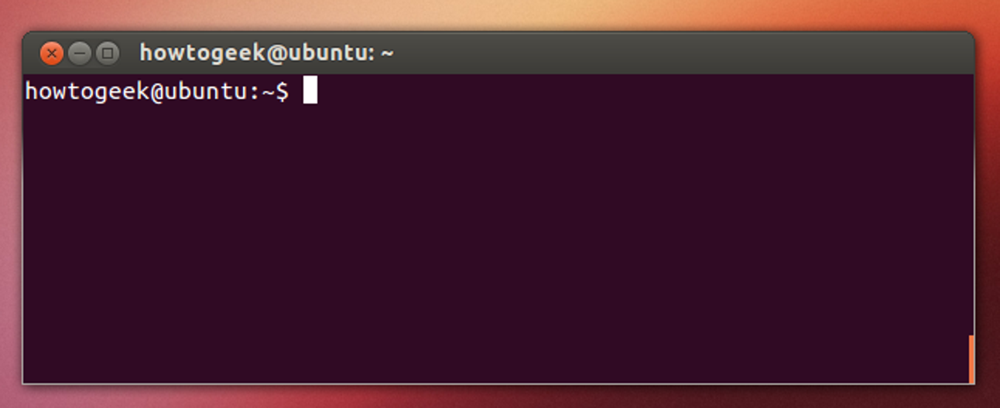

1. A Brief Introduction to Linux¶
Adapted from this digital ocean tutorial
1.1 What is Linux¶
Linux is a family of free and open-source operating systems based on the Linux kernel (core operating system). Operating systems based on Linux are known as Linux distributions or distros. Examples include Debian, Ubuntu, Fedora, CentOS, Gentoo, Arch Linux, and many others.
The Linux kernel has been under active development since 1991, and has proven to be extremely versatile and adaptable. You can find computers that run Linux in a wide variety of contexts all over the world, from web servers to cell phones. Today, 90% of all cloud infrastructure and 74% of the world’s smartphones are powered by Linux.
However, newcomers to Linux may find it somewhat difficult to approach, as Linux filesystems have a different structure than those found on Windows or MacOS. Additionally, Linux-based operating systems depend heavily on working with the command line interface, while most personal computers rely on graphical interfaces.
1.2 The Terminal¶
The terms “terminal,” “shell,” and “command line interface” are often used interchangeably, but there are subtle differences between them:
- A terminal is an input and output environment that presents a text-only window running a shell.
- A shell is a program that exposes the computer’s operating system to a user or program. In Linux systems, the shell presented in a terminal is a command line interpreter. The default shell in Ubuntu Linux is known as
bash. - A command line interface is a user interface (managed by a command line interpreter program) which processes commands to a computer program and outputs the results.
When someone refers to one of these three terms in the context of Linux, they generally mean a terminal environment where you can run commands and see the results printed out to the terminal, such as this:

There are two ways to open a terminal:
- Pressing the Win or Cmd key to open the program menu and typing
terminal, then pressing Enter - Pressing Ctrl+Alt+T
This default terminal is known as the 'gnome-terminal'. Other terminals exist such as 'terminator'
Becoming a Linux user requires you to be comfortable with using a terminal. Any administrative task, including file manipulation, package installation, and user management, can be accomplished through the terminal. The terminal is interactive: you specify commands to run (after the $ sign) and the terminal outputs the results of those commands. To execute any command, you type it into the prompt and press Enter.
When using the Starling system, interacting with Docker and ROS2, you'll most often be doing so through a terminal shell. Although personal computers that run Linux often come with the kind of graphical desktop environment familiar to most computer users, it is often more efficient or practical to perform certain tasks through commands entered into the terminal. As of writing, a GUI (Graphical User Interface) has not been developed for Starling, and so almost all tasks have to be achieved through the terminal shell.
A basic command to try out is echo, which will print things to the terminal. For example echo hello-world will print hello-world into the terminal. You can also use it to observe the value of Environment Variables which record and keep useful variables to the operation of the Operating System. For example, when you run a command in bash, bash will look for the command executable in the locations provided by the environment variable PATH. You can print the contents of this env-var using echo $PATH. The $ before the name of the variable tells bash that the following word represents an environment variable, and that it should be looked up.
1.3 Navigating the file system¶
Like Windows and Mac, the Linux filesystems are based on a directory tree. This means that you can create directories (which are functionally identical to folders found in other operating systems) inside other directories, and files can exist in any directory.
The forward slash (/) is used to indicate the root directory in the filesystem hierarchy.
When a user logs in to the shell, they are brought to their own user directory, stored within /home/<username>. This is referred to as the user’s home directory. Often you may see the tilde (~) character when specifying a file location (e.g. ~/Documents/hello.txt = /home/<username>/Documents/hello.txt). This is shorthand for the user's home directory and gets substituted in when used.
To see what directory you are currently active in you can run the pwd command, which stands for “print working directory”
myuser@my-machine:~$ pwd
/home/myuser
To see a list of files and directories that exist in your current working directory, run the ls command:
myuser@my-machine:~$ ls
Desktop Documents
Downloads Pictures
Public Wallpapers
You can get more details if you run ls -al command:
myuser@my-machine:~$ ls -al
drwxr-xr-x 2 myuser myuser 4096 Apr 30 2021 Desktop
drwxrwxr-x 8 myuser myuser 4096 Oct 29 09:27 Documents
drwxrwxr-x 8 myuser myuser 4096 Dec 10 14:41 Downloads
drwxrwxr-x 8 myuser myuser 4096 May 23 10:43 Pictures
drwxrwxr-x 8 myuser myuser 4096 Jan 19 2017 Public
drwxrwxr-x 8 myuser myuser 4096 Oct 15 09:43 Wallpapers
You can create one or more new directories within your current working directory with the mkdir command, which stands for “make directory”. For example, to create two new directories named testdir1 and testdir2, you might run the first command. You can create nested directories by using the -p option:
myuser@my-machine:~$ mkdir testdir1 testdir2
myuser@my-machine:~$ mkdir -p testdir3/testsubdir
To navigate into one of these new directories, run the cd command (which stands for “change directory”) and specify the directory’s name:
myuser@my-machine:~$ cd testdir1
myuser@my-machine:~/testdir1$
Note that you can navigate from anywhere to anywhere. cd only requires a valid filepath. Note also that . represents the current folder and .. represents the parent folder. Note also how is shows the current working directory in the shell as well.
cd # This will bring you back to home directory
cd testdir3/testsubdir # Brings you into testsubdir
cd ../ # Brings you back out one level into testdir3
cd ../testdir1 # Brings you back out one level and back into testdir1
cd /home/<username>/testdir2 # Absolute reference to testdir2
cd ~/testdir2 # Absolute reference using tilde to testdir2
1.4 Working with files¶
You cannot use cd to interact with files; cd stands for “change directory”, and only allows you to navigate directories. You can, however, create, edit, and view the contents of files.
One way to create a file is with the touch command. This creates an empty file in your current working directory. To create a new file called file.txt:
touch file.txt
If you decide to rename file.txt later on, you can do so with the mv command. mv stands for “move” and it can move a file or directory from one place to another. By specifying the original file, file.txt, you can “move” it to a new location in the current working directory, thereby renaming it.
mv file.txt newfile.txt
It is also possible to copy a file to a new location with the cp command. If we want to copy newfile.txt, you can make a copy of newfile.txt named newfile_copy.txt like this:
cp newfile.txt newfile_copy.txt
However, files are not of much use if they don’t contain anything. To edit files, a file editor is necessary.
There are many options for file editors, all created by professionals for daily use. Such editors include vim, emacs, nano, and pico.
nano is a suitable option for beginners: it is relatively user-friendly and doesn’t overload you with cryptic options or commands.
nano file.txt
This will open a space where you can start typing to edit the file. In nano specifically you can save your written text by pressing Ctrl+X, Y, and then Enter. This returns you to the shell with a newly saved file.txt.
Now that file.txt has some text within it, you can view it using cat or less.
The cat command prints the contents of a specified file to your system’s output. Try running cat and pass the file.txt file you just edited as an argument:
cat file.txt
Using cat to view file contents can be unwieldy and difficult to read if the file is particularly long. As an alternative, you can use the less command which will allow you to paginate the output. Use less to view the contents of the file.txt file, like this:
less file.txt
This will also print the contents of file.txt, but one terminal page at a time beginning at the start of the file. You can use the spacebar to advance a page, or the arrow keys to go up and down one line at a time. Press Q to quit out of less.
Finally, to delete the file.txt file, pass the name of the file as an argument to rm:
rm file.txt
rm -d directory
rmidr directory
rm -r directory # If the directory you are deleting is not empty
NOTE: If your question has to do with a specific Linux command, the manual pages offer detailed and insightful documentation for nearly every command. To see the
manpage for any command, pass the command’s name as an argument to themancommand -man command. For instance,man rmdisplays the purpose ofrm, how to use it, what options are available, examples of use, and more useful information.NOTE: If a command fails or is hanging or you just want to stop it, most of the time you can stop the running process by pressing Ctrl+C. This will send a Keyboard Interrupt message to the program and hopefully stop it.
1.5 Connecting the laptop to the Internet (Eduroam)¶
For University of Bristol students connecting to Eduroam see theese instructions
1.6 Installing Dependencies and Useful Programs¶
Like windows and mac, individual programs can be manually downloaded (usually as a tar.gz file instead of exe) and manually installed into your operating system (using dpkg). However, the linux project offers a much more straight forward method through the apt (Advanced Packaging Tool) utility. apt is a free-software user interface that works with core libraries to handle the installation and removal of software on Debian operating systems like Ubuntu. (For other distributions you may come across equivalents like yum). This is the primary method for installing software onto your system.
To use apt, and more specifically apt-get which 'gets' programs for you, you must first run the update command to get the current list of all available software. Note that because sudo is used, you will most likely need to input your password. sudo will be explained below.
sudo apt-get update
Note that it will hang (stop responding) or fail if you are not connected to the internet.
1.6.1 Installing Git and VSCode¶
You can then install your programs using apt-get install. For Starling, you will need to use the git version control software to both download Starling and eventually build your own controllers. To install git, run the following:
sudo apt-get install git
We also recommend the use of Visual Studio Code as your development environment or text editor, but you are free to use whatever you want (atom, notepad++ etc etc). We heavily make use of it during development and recommend a number of extensions. VScode can be installed using the snap utility. snap is a slightly more modern successor to apt for more general programs. snap comes ready installed on your linux distrubtion.
sudo snap install code --classic
1.6.2 sudo¶
Now in these commands, we have prefixed all of them with sudo. sudo these days usually stands for superuser do and allows a command to be run with the privileges of the superuser (aka the root user), if the user has been given permissions to do so. Any command which installs or modifies directories outside of the users home directory will often need superuser privileges to avoid non-superusers from changing things they shouldn't. As the above commands all seek to install programs to the system, they need superuser permissions to do so. Running without sudo will give you a permission error. Running a command with sudo will ask you for your own accounts password.
1.6.3 Installing Docker¶
For Linux systems, see the following install page. There are multiple ways of installation docker, but we recommend installing using the repository method:
-
Update the
aptrepository and install requirementssudo apt-get update sudo apt-get install \ apt-transport-https \ ca-certificates \ curl \ gnupg \ lsb-release -
Add Docker's official GPG key:
curl -fsSL https://download.docker.com/linux/ubuntu/gpg | sudo gpg --dearmor -o /usr/share/keyrings/docker-archive-keyring.gpg -
Add Docker's repository:
echo \ "deb [arch=$(dpkg --print-architecture) signed-by=/usr/share/keyrings/docker-archive-keyring.gpg] https://download.docker.com/linux/ubuntu \ $(lsb_release -cs) stable" | sudo tee /etc/apt/sources.list.d/docker.list > /dev/null -
Install Docker (and docker-compose!):
sudo apt-get update sudo apt-get install docker-ce docker-ce-cli docker-compose containerd.io -
Test Docker installation:
sudo docker run hello-world
This will install Docker, accessible using sudo root privileges only. To use docker without sudo, run the following (there are security issues with this, but it doesn't matter for running Starling locally)
-
Run the following
sudo groupadd docker sudo usermod -aG docker $USER -
Log out and log in again to enforce changes
- Verify that it was successful (we will come back to this command):
docker run hello-world
That is Docker on Linux installed. See the original page for any further details.